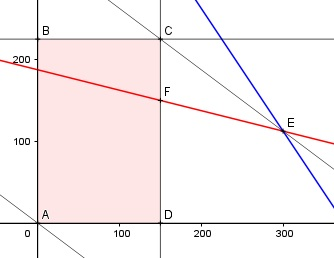

Aufgabe 87 Ein Landwirt will für eine Düngung die Düngersorten A und B mischen. Von A bekommt er von einem Händler maximal 150 kg, von B 225 kg. Die erste Mischung soll aus 20% der Sorte A, die zweite aus 40% der Sorte B bestehen. Beim Kauf gibt es für die Sorte A einen Preisnachlass von 0,30 € pro kg, für B einen von 0,40 €. Bei welcher Einkaufsmenge von A und B erzielt er den höchsten Preisnachlass N? x = kg Sorte A y = kg Sorte B Bedingungen: 0,2x + 0,8y ≤ 150 0,6x + 0,4y ≤ 225 Die Zusammensetzung ist nicht weiter beschrieben → keine weiteren Auswirkungen auf die Berechnung. x ≥ 0 x ∈ ℕ y ≥ 0 y ∈ ℕ Zielfunktion: N = 0,3x + 0,4y Randgerade 1: x = 150 Randgerade 2: y = 225 Gerade 3: 0,2x + 0,8y = 150 Gerade 4: 0,6x + 0,4y = 225

Die Eckpunkte A, B, C und D bilden das Planungs- gebiet, das alle Ungleichungen erfüllt. Punkt E liegt außerhalb des Planungsgebietes, Punkt F liegt unterhalb C. Eckpunkt C ist der Schnittpunkt der Randgeraden 1 und 2: C(150|225) Die Parallele zur Zielfunktion N liegt in C am höchsten -→ Mit 150 kg der Sorte A und 225 kg der Sorte B entsteht der größte Preisnachlass. Nmax = 0,3 * 150 + 0,4 * 225 = 135 €